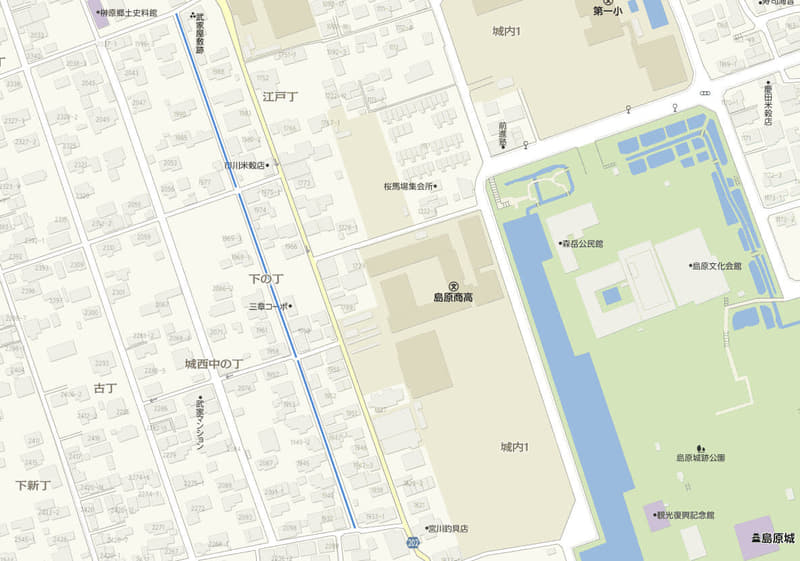
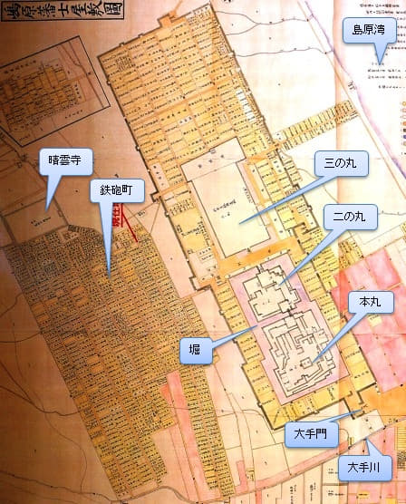
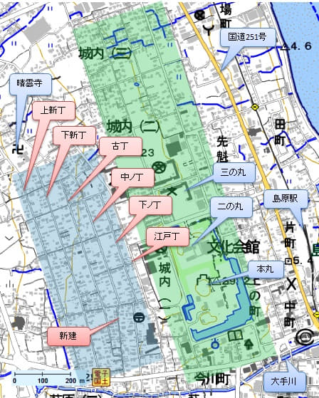

日本北九州春天賞櫻遊
武家屋敷(武家屋敷通り) – Part 1
遊覽完島原城, 沿村莊間的小路走約八分鐘便到達武家屋敷南面的入口。島原武家屋敷通り是江戶時代武士居住的地方, 這條406.8公尺長的歷史街道, 在1977年已被指定為保存區域。


島原市 武家屋敷通り
連接島原城西邊共有七條街道, 分別為上新丁、下新丁、古丁、中丿丁、下丿丁、江戶丁及新建。接受俸祿70石 (1石=2.5俵=約150公斤的米糧)以下的步兵便住在城下町這一帶, 約有700戶住宅相連在一起。因為也是鐵砲隊的居住地, 故這一帶也被稱為鐵砲町。
在各丁道路中央均設有水道, 流水清澈, 可作為日常生活用水。但因道路中央的水道不利於防火防災, 所以從昭和25年開始被移至路邊。而「下の丁」的街道因得到居民的共同協力下, 爭取到「武家屋敷街道保存區」的權力, 才得以以當時的樣貌保存下來。
下の丁的武家屋敷總長為 406.8公尺, 目前有山本宅邸、鳥田宅邸和篠塚宅邸開放免費參觀, 讓遊客認識當時武士家的生活模樣。



了解完武家屋敷的一些歷史背景, 開始沿水道慢慢遊覽。今天不是假日, 遊人十分稀少, 正好可以靜靜的感受古時的氣氛。
水道和兩側的沙土地面、石牆都保存著昔日的風貌, 漫步其間彷彿回到江戶時代。
下の丁的武家屋敷保存了很多當時武士的宅邸, 鳥田宅邸是其中一間免費開放給遊人參觀的武士家。
鳥田宅邸
入口處有鳥田宅邸的簡單歷史介紹。
遊客可以進內隨處參觀, 了解當時武士家的日常生活模樣。
參觀完鳥田宅邸, 感覺到古代生活雖然沒有現代人的舒適, 但卻多了悠閒和簡樸。
日本北九州春天賞櫻之旅
第12天: 熊本乘渡輪往島原、長崎
- 熊本、島原外港、島原市、長崎行程安排
- 熊本駅乘巴士往熊本港
- 熊本港乘渡輪往島原外港 - Part 1
- 熊本港乘渡輪往島原外港 - Part 2
- 熊本渡輪延誤．完美計劃失敗
- 島原外港搭乘路線超級迂迴巴士往島原駅
- 從島原駅沿七万石坂走往島原城
- 沿東崛、南崛和西崛端通り到島原城入口
- 歷盡滄桑的島原城
- 天守閣展望台俯瞰彷如仙境的島原市
- 島原城步行往武家屋敷
- 武家屋敷(武家屋敷通り - Part 1
- 武家屋敷(武家屋敷通り - Part 2
- 武家屋敷走回島原駅的緊湊半小時 - Part 1
- 武家屋敷走回島原駅的緊湊半小時 - Part 2
- 趕及登上島原鉄道13:35急行列車班次
- 島原乘島原鉄道、JR長崎本線往長崎
- 下榻東橫 INN 長崎站前
- 大波止乘5號巴士往稻佐山
- 稲佐山巴士站爬上展望台
- 稲佐山展望台俯瞰長崎市壯觀景色
- 長崎稲佐山價值千萬美金夜景
- 稲佐山乘巴士返回長崎市區五島町